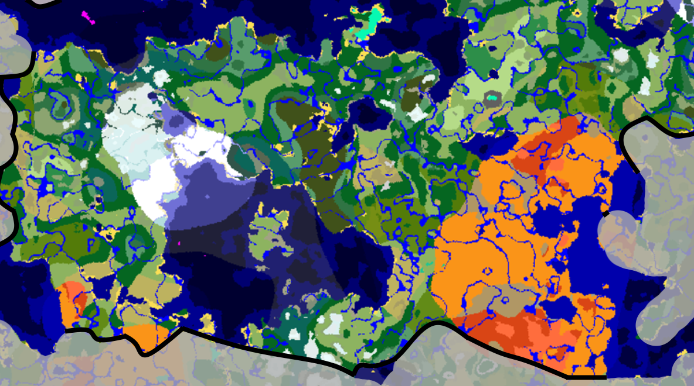
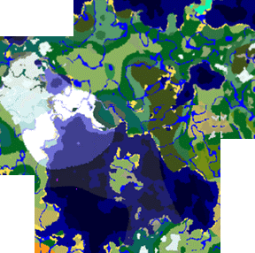
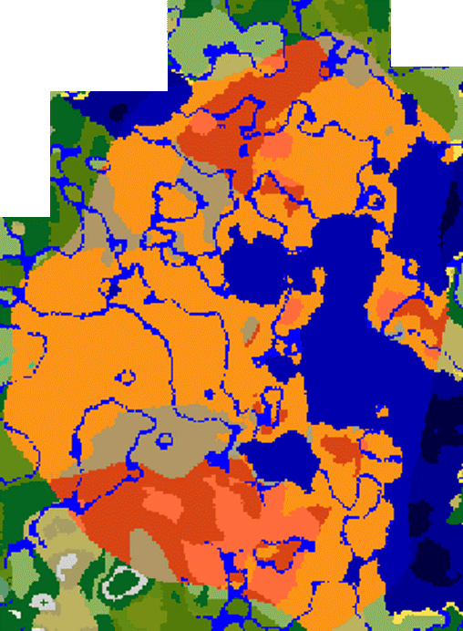
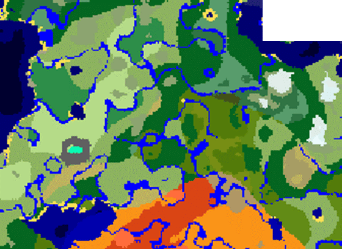
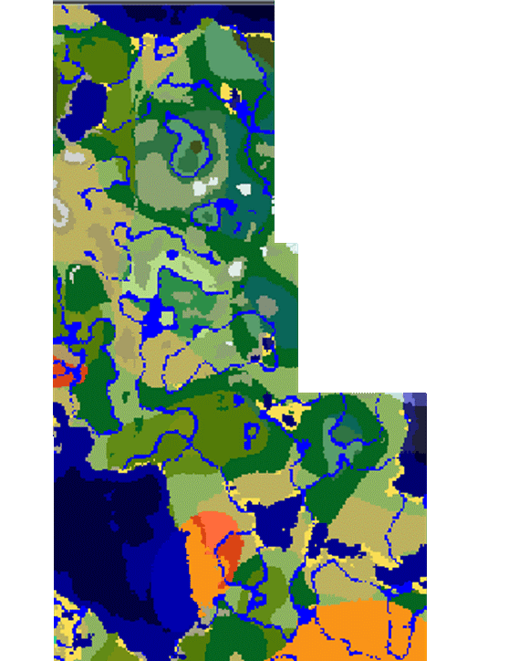
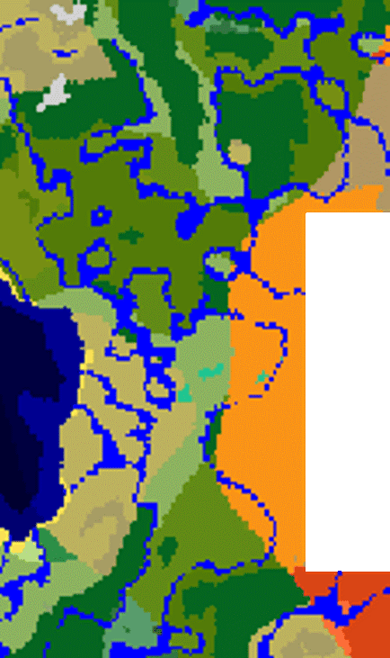

Aspakei
Aspakei
Le 5 regioni
L'Impero è diviso in 5 regioni. Non si tratta di una divisione politica in quanto l'autonomia delle singole regioni è molto bassa, ma si basa invece sulla geografia del
territorio. L’obiettivo della regione è facilitare l’amministrazione e l’analisi dei dati.
Oltre alle città di Aspakei, ci sono anche villaggi ad amministrazione speciale (SAAV) e terreni pubblici non reclamabili (TPNR).
Le prime sono singole città che hanno poteri speciali quando si tratta di dare potere a determinati tipi di leggi.
Questo concetto fu introdotto dal primo Imperatore per migliorare il morale generale. Al momento è rimasto solo un SAAV, situato vicino a Kadekei sui monti Xargur.
Le seconde invece, sono aree protette dalla legge internazionale “NRPL act As.L.”, secondo la quale alcuni territori non possono essere occupati da nessun paese per
consentire a chiunque di facilitare l'accesso a diversi diritti, come la non persecuzione, l'accesso all'informazione e all'istruzione, l'assistenza sanitaria… Le
uniche leggi vigenti in queste aree sono leggi internazionali e mandati di arresto internazionali per motivi non politici.

Aspozhmonto
Questa regione ospita alcune delle città più importanti, tra cui Kadekei, Lucozhkei, Isozhkei e Borvozhkei. La regione è caratterizzata dai tre laghi principali dell'Impero, chiamati Spergiso, che significa «lago ghiacciato» a nord-ovest, tra le montagne e la pianura di Bisho, Voskakyo, uno dei più grandi del pianeta, che copre quasi tutta la parte meridionale della regione e ospita una grande isola, e il Vonko, nella parte orientale della pianura di Bisho.

Aginserto
In questa arida regione vive uno dei personaggi più importanti dell'Impero. Il popolo Oa ha una delle lingua e culture più antiche. A causa del suo territorio, esiste una sola grande città, Sandozhkei, riconosciuta a livello internazionale come la migliore città in cui viaggiare per scambi culturali.
A est del deserto si trova il Sandonkemo, un lago. A causa della sua posizione vicino al deserto, l’acqua non è buona. È sporco e molto salato, quindi è difficile da pulire e da bere. D'altra parte, ci sono alcuni fiumi che scorrono solo in autunno e in inverno.

Fluvyorplaxo
Situata a nord di Aginserto, Fluvyorplaxo, a differenza della regione meridionale, ha avuto l'opportunità di svilupparsi grazie ai fiumi che scorrono in tutti i tempi consentendo l'agricoltura e la costruzione di città e villaggi più grandi, come Fluvyozhkei, una delle città più popolate dell'Impero.

Dheyonkoyo
Dheyonkoyo è dove tutto è iniziato. Come dicono studi archeologici e antropologici, il popolo Kondo molto probabilmente ebbe origine qui ma emigrò dopo che una serie di terremoti distrussero tutto in questa zona. Ora questa regione non ha molti abitanti, ma ospita Xayofkei, il primo prototipo funzionante di città galleggiante.

Vertorplaxo
Vertorplaxo si trova ad ovest di Aginserto e condivide una storia comune con Fluvyorplaxo. Ha molte risorse minerarie, in particolare carbone, ferro, rame, e possiede la miniera più importante di klampirinkyo (un minerale composto da zolfo, ferro, rame e zinco). Per questo motivo questa regione è stata soggetta negli anni a invasioni e occupazioni da parte di paesi nemici
